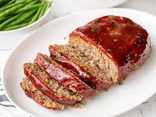

Meat Loaf

Ingredients
- 1 1/2lbs ground beef
- 1 egg
- 1 onion, chopped
- 1 cup of milk
- 1 cup dried bread crumbs
- salt and pepper for taste
- 1/3 cup ketchup
- 2 tablespoons brown sugar
- 2 tablespoon prepared mustard
Steps
- Preheat the oven to 350 degrees. LIghtly grease a 9x5-inch loaf pan
- Combine ground beef, onion, milk, bread crumbs, and egg in a large bowl; season with salt and pepper and transfer into prepared loaf pan.
- Mix ketchup, brown sugar, and mustard together in a small bowl until well combined; pour over meatloaf and spread it evenly over the top.
- Bake in the preheated oven until no longer pink in center, about an hour